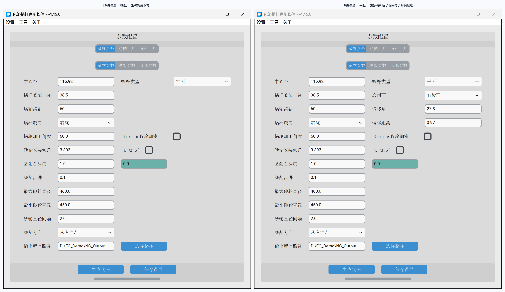
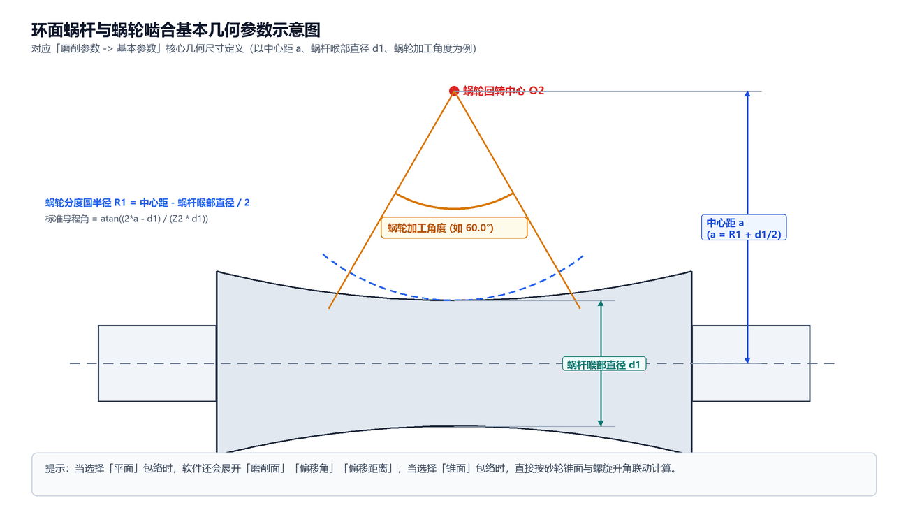

2.1 基本参数详解
基本参数 集中管理工件基础几何、砂轮直径序列、磨削进给策略以及 平面 / 锥面 包络模式切换。

一、工件与轨迹几何参数

1. 中心距
- 单位： ｜ 示例值（
Sample_C_117）：116.921 - 含义：蜗杆轴线与配对蜗轮回转轴线之间的最短垂直距离 。
- 影响：与
蜗杆喉部直径共同决定蜗轮分度圆半径 ，直接作为输出目录PC_<中心距>的命名依据。
2. 蜗杆喉部直径
- 单位： ｜ 示例值（
Sample_C_117）：38.5 - 含义：环面蜗杆中间最细咽喉处分度圆直径 。
- 影响：与
中心距、蜗轮齿数联动实时计算右侧的标准喉部分度圆导程角。
3. 蜗轮齿数
- 单位：整数（齿） ｜ 示例值（
Sample_C_117）：60 - 含义：配对蜗轮的牙齿总数量 。
- 影响：决定传动比与摇篮摆动时
C轴相对B轴的联动增量转角（）。
4. 蜗杆旋向
- 可选项：
右旋（默认） /左旋 - 含义：沿蜗杆轴线观察螺旋线的前进方向。
- 影响：决定加工时工件主轴
C轴旋转方向及A轴倾角偏置符号。
5. 蜗轮加工角度
- 单位：
°（度） ｜ 示例值（Sample_C_117）：60.0 - 含义：砂轮在磨削包络运动中相对蜗轮回转中心摆动的总包络角度 （对应
B轴从 摆到 ）。 - 影响：必须完整覆盖蜗杆有效工作齿数对应的包络弧段并适当留出切入/切出余量。
6. 砂轮安装倾角
- 单位：
°（度） ｜ 示例值（Sample_C_117）：3.393 - 含义：砂轮主轴相对工件端面倾斜安装的角度（通常取图纸导程角或螺旋角）。
- 便捷功能：输入框右侧实时显示按标准公式算出的喉部分度圆导程角（如
Sample_C_117处显示4.8336°）；勾选右侧复选框即可一键将计算结果填入砂轮安装倾角。
二、包络类型与条件展开参数
7. 蜗杆类型
- 可选项：
平面/锥面 - 动态界面行为：
- 选
锥面时：适用于砂轮双侧锥面或渐开线包络砂轮加工，右侧自动隐藏磨削面、偏移角、偏移距离； - 选
平面时：适用于平面二次包络环面蜗杆单面切向磨削，自动展开以下 3 项专属参数。
- 选
8. 磨削面（仅 平面 可见）
- 可选项：
左齿面/右齿面 - 含义：指定当前生成程序所磨削的环面蜗杆齿面侧别（
右齿面加工时程序自动将安装角转向 侧并反号偏置B轴中点）。
9. 偏移角（仅 平面 可见）
- 单位：
°（度） - 含义：平面包络产形平面相对基准半径线的偏移倾角。
10. 偏移距离（仅 平面 可见）
- 单位：
- 含义：平面包络产形平面相对回转中心的法向偏移距离（会在生成的
.SPF文件头自动输出计算后的砂轮Z向偏移量与砂轮X向偏移量）。
三、磨削余量、砂轮范围与输出设置
11. 磨削总深度（带右侧绿色微调框）
- 单位： ｜ 示例值：主框
1.0、右侧绿色微调框0.0 - 含义：从
FeedLeft最大值到0.00的余量分段覆盖范围；若磨削总深度不是磨削步进的整数倍，软件会自动向上取整到步进整数倍。 - 绿色微调框：用于在不改动程序跳转标签的前提下，整体多磨或少磨一定深度以微调最终齿厚（实际计算半径 ）。
12. 磨削步进
- 单位： ｜ 示例值：
0.1 - 含义：程序内相邻
CV_x_xx余量分支之间的步长（例如1.0总深度配0.1步进将生成CV_1_00至CV_0_00共 11 个坐标段）。
13. 最大砂轮直径 / 最小砂轮直径 / 砂轮直径间隔
- 单位： ｜ 示例值（
Sample_C_117）：460.0/450.0/2.0 - 约束：
最大砂轮直径必须大于等于最小砂轮直径，否则弹窗报错。 - 生成逻辑：软件从
最小砂轮直径起每隔砂轮直径间隔递增至最大砂轮直径，为每个直径生成独立.SPF文件（如DIA_450_0000.SPF~DIA_460_0000.SPF）。
14. 磨削方向
- 可选项：
从左往右/从右往左 - 含义：控制砂轮沿蜗杆轴向走刀的起终点顺序（互换
Start_Pos与End_Pos及对应B/C轴起止点），用于匹配顺磨或逆磨工况。
15. Siemens程序加密
- 选项：复选框（默认不勾选）
- 平台限制：仅 Windows 版可用（macOS 下自动置灰禁用）。
- 效果：勾选后调用内置加密组件将明文
.SPF转换为西门子机床专用的.cpf加密程序，并自动删除原始.SPF。
16. 输出程序路径
- 操作：点击
选择路径指定根目录（例如D:\EG_Demo\NC_Output）。 - 输出位置：软件会在该目录下自动重建
PC_<中心距>文件夹（4 位小数下划线拼接，如PC_116_9210）并存入全部程序。